Fix the model, parameters and acceptance tests, then commit them before model code.
- Book
- 214 positions · 10 PMs · 4 prime brokers · 77 products
- 90-day cost and margin
- USD 21,714,337Margin USD 1,747,690,859 · financing 17,345,110 + margin funding 4,369,227
- Binding limits
- Capacity 0 of 4 PBs · counterparty 1 (PB_B) · borrow 4814 no-locate rows fixed at 0
- Checks
- A1–A8 + X1–X3 passHand-worked example reproduced to the cent
The problem
A multi-PM fund spreads positions across prime brokers whose rates, offsets, borrow and limits differ. Where each position sits changes financing cost and margin locked up, so PMs need a fair, explainable view of the margin they drive.
The approach
Calculate a margin proxy, find a cost-minimising allocation, then attribute PM usage.
Reproduce the hand-worked example to the cent, test invariants and an exchange sanity band, and run CI on every push.
1. The question and the design
The data contract defines positions, PMs, products, prime brokers, rates, borrow availability, parameters and price history as separate inputs. Each model input is tagged as sourced, assumed or to be calibrated; this study's book and broker terms are synthetic.
The margin proxy groups by product family, liquidity tier and volatility bucket. It nets positions within a family at each broker, blends net and gross exposure, adds an account-relative issuer concentration charge, then applies a 1.15 house buffer. The linear program minimises financing, borrow and margin-funding cost over 90 days, subject to complete allocation, broker capacity, counterparty margin and borrow-availability constraints.
2. Results
The seeded run placed the full book across all four brokers. The measured results show which constraints bound and how margin usage and illustrative charges were attributed.
| Measure | Result | Reading |
|---|---|---|
| Objective over H | USD 21,714,337 | Financing plus margin funding over 90 days |
| Financing cost | USD 17,345,110 | Measured run total |
| Margin funding cost | USD 4,369,227 | Measured run total |
| Total margin M | USD 1,747,690,859 | Recalculated from the chosen allocation |
| Allocation | 214 positions; all 4 PBs used; 49 split positions | Each position is fully allocated |
| Capacity | 0 of 4 PBs binding | No capacity limit binds |
| Counterparty | PB_B binds at USD 211,730,389 | Other 3 PBs have slack |
| Borrow | 48 positive borrow limits bind; 14 no-locate rows have limit 0 | Unavailable required locates are fixed at 0 |
E1–E5 were fixed in the pre-registration before the run; each is reported as measured.
| Expectation | Measured outcome |
|---|---|
| E1 · Hedged pairs inside a family sit at one PB unless capacity or borrow forces a split | Not confirmed as stated – 11 of 26 hedged families sit at one PB and 15 are split; the run does not isolate why. |
| E2 · At least one capacity or counterparty constraint binds; the cheapest PB on financing is not the sole PB used | Confirmed – counterparty binds at PB_B; all 4 PBs hold positions. |
| E3 · Shorts in issuers with locate at only one PB sit there; tight locate shows a positive borrow dual | Confirmed – all 7 short positions in sole-locate issuers sit at that PB; across the book, 48 binding borrow limits have positive duals. |
| E4 · At least one PM has u_k < 0 | Not confirmed – no PM has negative usage. |
| E5 · θ 0.25 → 0.30 lowers M; θ → 0.20 raises M weakly | Confirmed – M is 1,749,176,390 at θ 0.20, 1,747,690,859 at base, and 1,745,978,305 at θ 0.30 USD. |
3. Stress-testing the book
Seven pre-registered scenarios re-run the same optimiser on the same book. The base case reproduces Phase 1 to the cent.
| Scenario | Δ total margin (USD) | Status | Binding block |
|---|---|---|---|
| ST0 base | 0.00 | optimal | — |
| ST1a vol ×2 | 155,492,954.66 | optimal | — |
| ST1b vol ×1.5 | 140,594,913.93 | optimal | — |
| ST2a margin rate ×1.5, all PBs | 842,034,911.67 | infeasible | Counterparty |
| ST2b margin rate ×1.5, PB_D + PB_A | 519,152,546.17 | infeasible | Counterparty |
| ST3 PB_D termination | 46,939,714.20 | infeasible | Counterparty · borrow |
| ST4 combined | 478,719,249.80 | infeasible | Counterparty · borrow |
Doubling volatility is absorbed within broker limits (+USD 155,492,954.66 margin). A 1.5× margin-rate shock or the loss of one broker breaches counterparty limits; the termination cases also breach borrow limits. The allocation shown for infeasible cases is the minimum-slack allocation.
3 of 5 pre-registered expectations met (E-S1, E-S3, E-S5); E-S2 and E-S4 reported as found.
The additional funding requirement is not a cash amount; counterparty slack is margin above the counterparty limits and is already included in total margin.
4. Calibrating the rates to public market data
Each of seven product types maps to an illustrative public-market proxy. The target uses two-sided expected shortfall at 97.5% on overlapping returns over an assumed margin period of risk; a point-in-time stressed component—the worst 250-observation window ending by the estimation date—is blended at 25% with a floor at recent ES. One scaling factor per product type is applied to Phase 1 rates, preserving every broker, product and liquidity-tier relativity.
- Coverage
- 7 product types · 5 public series
- Backtest:
- every row in the green zone
- ZN comparison
- 0.662–1.073× exchange initial margin
- Reproduction
- Byte-identical from a clean clone
| Product type | Proxy | h | ES recent | ES stress | Stressed window end | T | k_t |
|---|---|---|---|---|---|---|---|
| cash_equity | SPY | 10 | 0.078283 | 0.222669 | 2020-03-23 | 0.114380 | 0.504218 |
| cds_proxy | HYG | 5 | 0.017473 | 0.096872 | 2020-03-23 | 0.037323 | 0.563725 |
| commodity_future | GLD | 2 | 0.065027 | 0.083053 | 2026-06-10 | 0.069534 | 0.434989 |
| equity_swap | SPY | 10 | 0.078283 | 0.222669 | 2020-03-23 | 0.114380 | 0.572883 |
| fx_forward | DEXUSEU | 10 | 0.043681 | 0.057416 | 2016-01-14 | 0.047115 | 1.380636 |
| govt_bond | DGS10 | 10 | 0.028551 | 0.050620 | 2020-04-01 | 0.034068 | 1.618377 |
| irs_proxy_future | DGS10 | 2 | 0.013452 | 0.022585 | 2023-02-06 | 0.015735 | 0.450254 |
The walk-forward backtest uses every month-end from January 2019 to September 2026, non-overlapping test windows, and separate long and short sides. The stressed component lowers worse-side exceedances strictly for 5 of 7 types (4 of 6 distinct proxy/horizon pairs, because cash equity and equity swaps share a proxy). With 173–175 non-overlapping windows for h = 10, zero exceedances gives Kupiec p ≈ 0.06: at these sample sizes the test has little power to reject a conservative target, and every zone is green.
| Expectation | Result | Evidence |
|---|---|---|
| E-C1 | Met | Stressed ES exceeds recent ES on every target row; the floor is non-binding. |
| E-C2 | Met | MPOR target increases; ES 97.5 is at least VaR 99; scaling gaps are 5.00% and 4.52%. |
| E-C3 | Met | 5 of 7 types; 4 of 6 distinct proxy/horizon pairs. |
| E-C4 | Not met – no PM changes rank | |
| E-C5 | Met | All ratios are within 0.5–3; observed range 0.662–1.073. |
5. How the model fits together


6. How every number is checked
| Test | What it proves |
|---|---|
| A1 | Hand calculation for margin, attribution and charge matches the worked example. |
| A2 | Margin invariants: zero and nonnegative values, monotonicity, convexity, homogeneity and determinism. |
| A3–A4 | The stated offset rule reduces margin, and positions at different PBs do not net. |
| A5 | Constraint checks, infeasibility diagnosis and epigraph agreement. |
| A6 | Usage totals and ordering, empty cases and invalid-rate rejection. |
| A7 | Exchange sanity band (sanity only – Phase 2b calibration is separate). |
| A8 | Required validation disclosure and heading sequence. |
| X1–X3 | Re-solve, all-in cost and Euler range exhibits. |
| Stress tests (Phase 2a) | base case reproduces Phase 1 to the cent; scenario outputs reproduce. |
| C1–C13 (Phase 2b) | ES/VaR rule, overlapping returns, floored target, mapping round-trip, relativities, point-in-time, backtest windows, traffic light, input digest. |
Changes from the pre-registration are recorded in the deviations log. Regenerate the outputs with python -m mfl.cli run --seed 42 --out reports/local.
7. What it does not claim
- rates are calibrated to illustrative public-market proxies – not to any broker, exchange or clearing house; proxies are not instrument-matched (index for single names, gold for other commodities, one 10-year duration for all rates products).
- stress is static – no margin-call or path dynamics; slack is not a cash amount.
- The book and broker terms are synthetic; the charge is illustrative.
- The model is not validated. See MODEL_DOC.md §12.
- The proxy uses limited per-broker family offsets and does not represent a broker's actual methodology.
Synthetic book and broker terms; public market series are used only to calibrate rate levels and as an exchange sanity check. Illustrative model – not validated, not any firm's methodology.